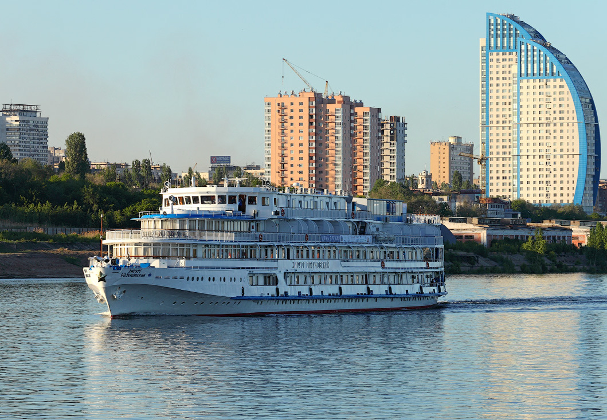
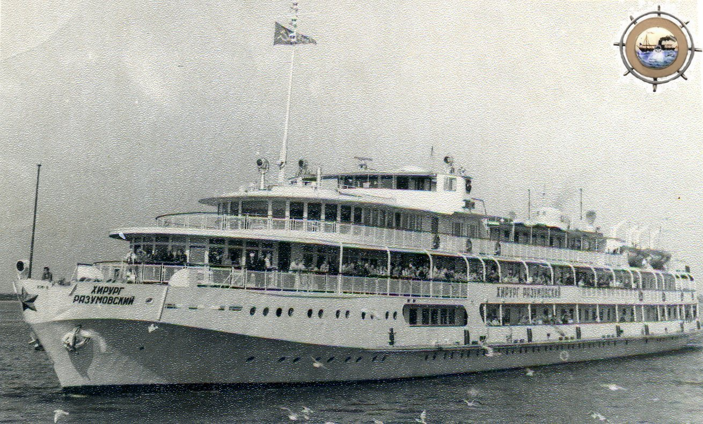

История
Пассажирский четырёхпалубный теплоход-пансионат "Хирург Разумовский" (проект 588 МА) построен на судоверфи Mathias Thesen Werft Wismar", г.Висмар, Германия. Этот теплоход стал завершающим в серии судов 588-го проекта.
После постройки теплоход поступил в Камское речное пароходство, где и остается по настоящее врема, а оператором судна является компания «Спутник-Гермес», которая организует на нем круизы из Самары.
Прошёл полную модернизацию в 2007 году и получил дополнительную четвёртую палубу. Оснащён современным навигационным оборудованием и развивает скорость до 23 км/час. Длина-95,8 м, ширина 14,3 м, осадка 2,7 м. Пассажировместимость - 160 человек.